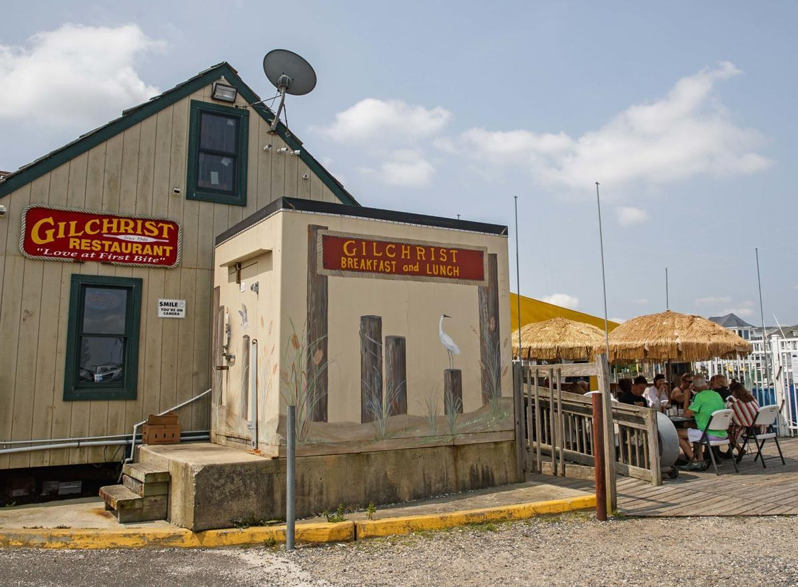

Gilchrist
Located on the Atlantic City Boardwalk, Gilchrist's is one of the top breakfast destinations with a classic diner offering something for everyone. You can order from their huge selection of breakfast foods, but the one thing you have to get every time is their famous hotcakes. These are very thin and soft pancakes that soak up syrup perfectly. You can order the "hungry man's combo #2," which came with hotcakes, 2 eggs cooked however I wanted, my choice of meat (sausage), and home fries. This was the perfect breakfast.